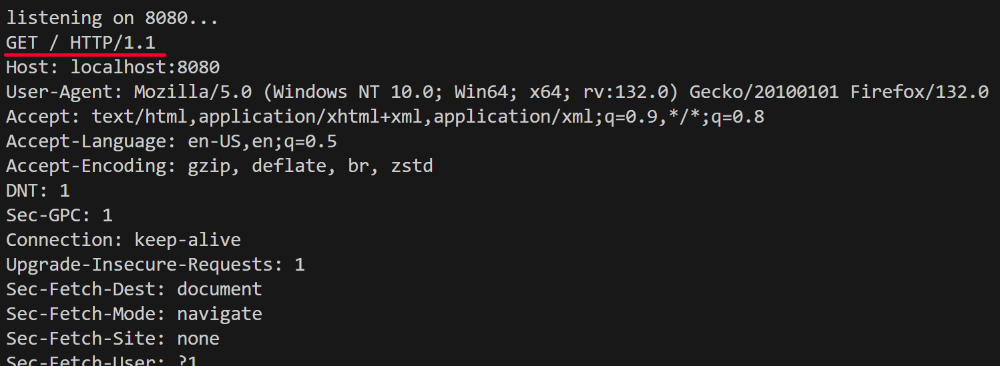
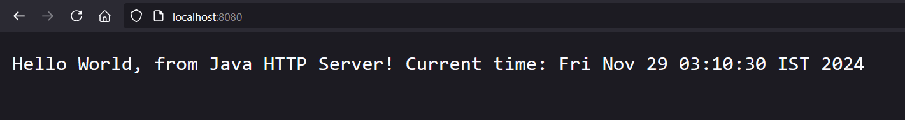

29 Nov, 2024
Hello World! In this article, we will learn how to implement a very simple HTTP server using Java. This is gonna be a short and simple.
Java provides extremely good networking support, due to this its often used in backend development for big enterprise-level companies. So here you will learn how to build basic HTTP server using Java's native networking capabilities. So just read this short article and follow along, its gonna be easy!
First step is to create a socket, this socket's job is to accept incoming connections on certain port that is to be specified. Ports are basically sort of “endpoint” where a connection can be made and data can be sent, different processes/applications have different ports and using these ports they can receive communicate. Port numbers range from 0 to 65535, with some ports pre-assigned for specific protocols (e.g., HTTP uses port 80, DNS uses port 53).
We can use a java class called ServerSocket which waits for incoming requests to a particular port, we will use port 8080 for this demonstration:
import java.net.ServerSocket;
import java.net.Socket;
public class HTTPServerUsingJava {
public static void main(String[] args) throws Exception {
final ServerSocket server = new ServerSocket(8080);
System.out.println("listening on 8080...");
while (true){
Socket client = server.accept();
// infinite loop
}
}
}
Running this code will create a socket that will wait for any connection request coming to the port 8080. And you can of course access this server using any browser by navigating to http://localhost:8080
Note: The page will keep loading forever, cause its sending request to port 8080, and the connection request is getting accepted too! but no response is being sent (cause we didn’t program that much yet lol)
Now you have implemented HTTP server by creating a socket that is actively listening to a specific port for connections and accepting incoming connections (even if its not giving anything in response).
But how do we know what is happening behind the scenes and if the connection is actually being made or not? Lets understand that in this step.
When you are navigating to http://localhost:8080 your browser is sending a GET request to the server you just created. We can even read the content of that request that is being sent on the server side! Lets read the content being sent by browser using the InputStreamReader and BufferedReader java class for that.
import java.net.ServerSocket;
import java.net.Socket;
import java.io.BufferedReader;
import java.io.InputStreamReader;
public class HTTPServerUsingJava {
public static void main(String[] args) throws Exception {
final ServerSocket server = new ServerSocket(8080);
System.out.println("listening on 8080...");
while (true){
try(Socket client = server.accept()){
InputStreamReader in = new InputStreamReader(client.getInputStream());
BufferedReader reader = new BufferedReader(in);
String line = reader.readLine();
while(!line.isEmpty()){
System.out.println(line);
line = reader.readLine();
}
}
}
}
}
Now, if you compile this and navigating to http://localhost:8080 , you still get nothing. BUT BUT BUT!!!! Now if you check the console after navigating:
your browser sent a bunch of info to the server which you can read like the request type GET and the HTTP protocol being used here which is HTTP/1.1!!! Pretty neat huh!
Lets understand how the each line of code is working inside the while loop:
InputStreamReader: reads the input stream from the client socket that got the GET request by the browser.BufferedReader: buffers the input for efficient reading, cause there are multiple lines in request.readLine(): reads a line of text from the input stream.while loop continues until an empty line is encountered, printing each line to the console.Now you have created a basic HTTP server that's active, listening for requests and accepting requests at server side (and showing request details additionally). Lets see how we can make our server send basic response in this step.
Lets make our server respond with “hello world” and show current local date and time:
just create a “response” String that should start with "HTTP/1.1 200 OK\r\n\r\n" inside the while loop, and you can send the response with client.getOutputStream().write(response.getBytes());. Keeping the backend side BufferedReader part in code is your choice, as it doesn't affect our response.
we will add the following in the loop:
// HTTP response part String response = "HTTP/1.1 200 OK\r\n\r\n" + "Hello World, from Java HTTP Server! Current time: " + new Date(); // Send response to client client.getOutputStream().write(response.getBytes());
Let's break down the response string:
"HTTP/1.1 200 OK\r\n\r\n": this is a status line, where:
Final code should look like this:
import java.net.ServerSocket;
import java.net.Socket;
import java.io.BufferedReader;
import java.io.InputStreamReader;
import java.util.Date;
public class HTTPServerUsingJava {
public static void main(String[] args) throws Exception {
final ServerSocket server = new ServerSocket(8080);
System.out.println("Listening on port 8080...");
while (true){
try(Socket client = server.accept()){
// Backend request info part (optional)
InputStreamReader in = new InputStreamReader(client.getInputStream());
BufferedReader reader = new BufferedReader(in);
String line = reader.readLine();
while(!line.isEmpty()){
System.out.println(line);
line = reader.readLine();
}
// HTTP response part
String response = "HTTP/1.1 200 OK\r\n\r\n" +
"Hello World, from Java HTTP Server! Current time: " + new Date();
// Send response to client
client.getOutputStream().write(response.getBytes());
}
}
}
}
Once compiled, visit the server in the browser you will see output:
Congrats!!!
You have successfully understood and implemented a working and simple HTTP server using Java. The response is coming from a server that's running on your system at port 8080!
This was most basic level of implementation of HTTP server, you can further improve on it by adding other complex stuff like:
and much more!
I have created a bit complex level of similar project on HTTP server implementation myself, which supports multithreading, allowing it to handle multiple client connections simultaneously. You can refer to this project too.
>https://programmerpratik.github.io/projects/http-using-java.html
Hope you found this article helpful! Thanks for reading have a great day <3